This is a story written by Angela Smart about her favorite childhood horse and some of their time together.
My horse's real name was Mr. Stars, but we just called him Whiskers.
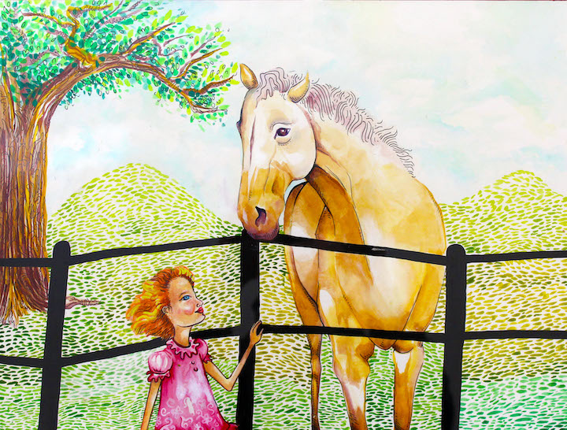
page 1
He wasn't the most beautiful horse, but we loved him despite all the snickers.
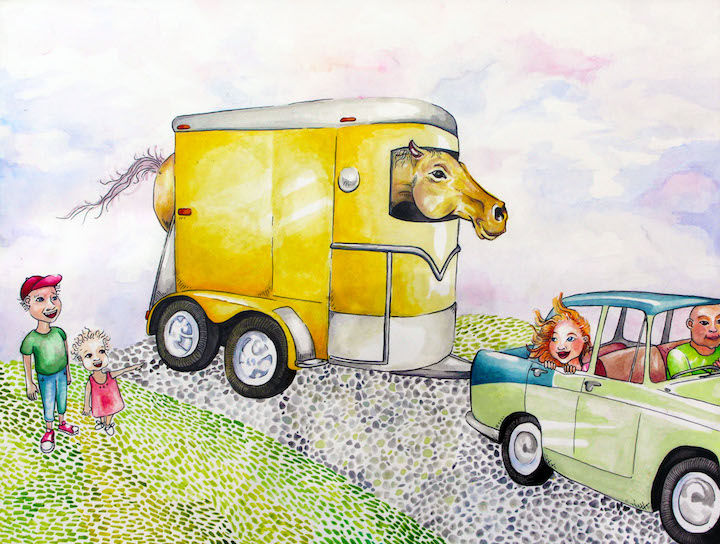
page 2
He was skinny and clumsy, his mane tangled and thin.
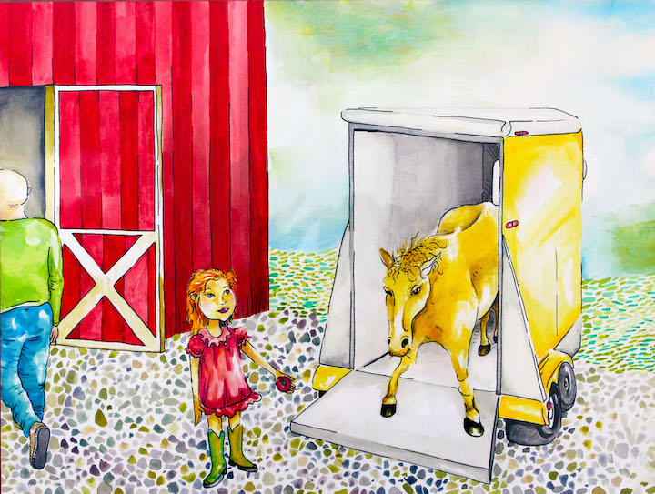
page 3
But under his whiskery muzzle, he was confident, proud and always made me grin.
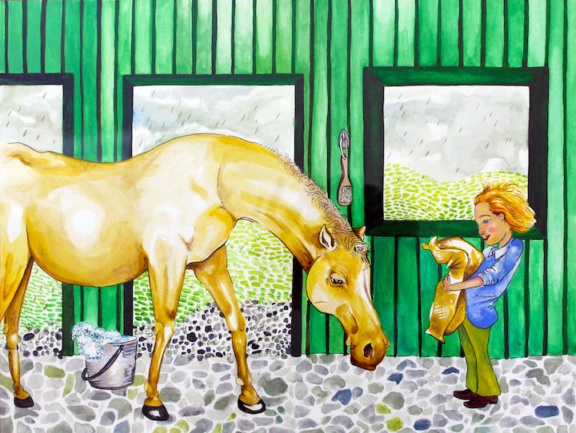
page 4
We cleaned him up, untangled his hair and gave him plenty to eat.
We even trimmed his ears and mouth and put shoes upon his feet.
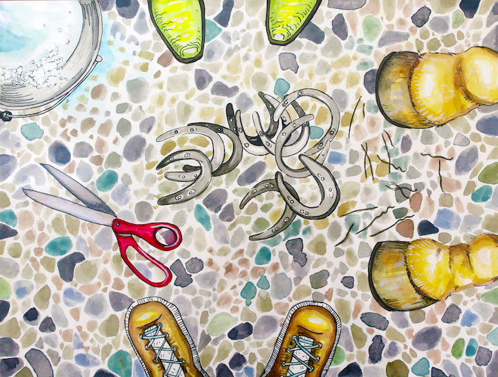
page 5
He competed with the finest horses, and we did the best we could.
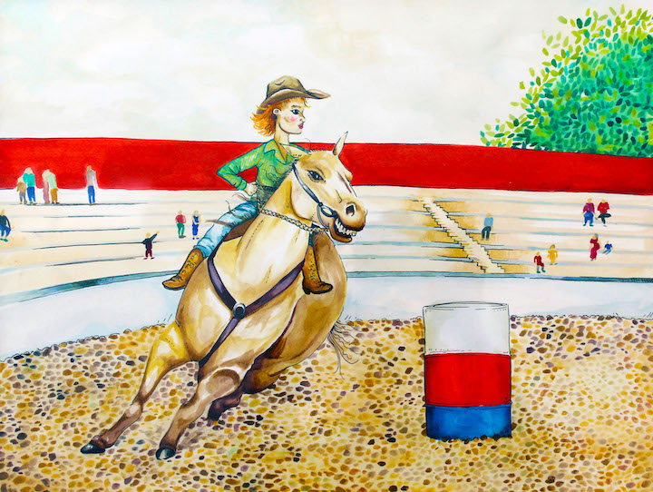
page 6
Sometimes we even won a ribbon, though others doubted we would.
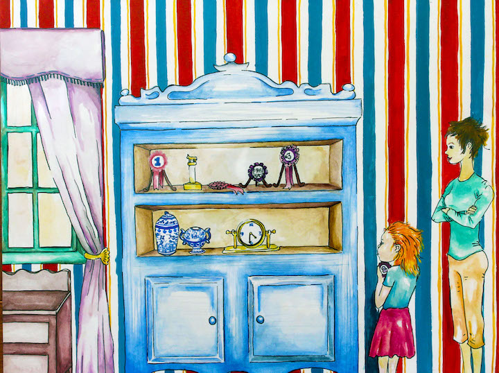
page 7
He did funny things, that whiskery horse. To not laugh at him was quite hard.
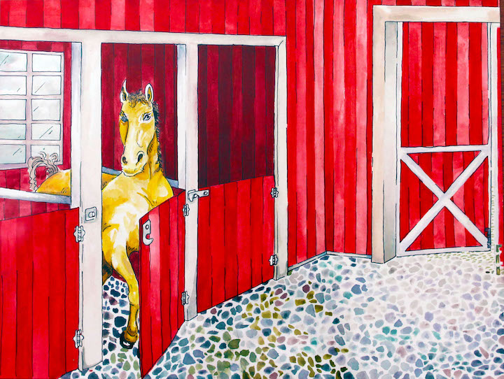
page 8
One morning, I found him munching the grass right in our family's front yard!
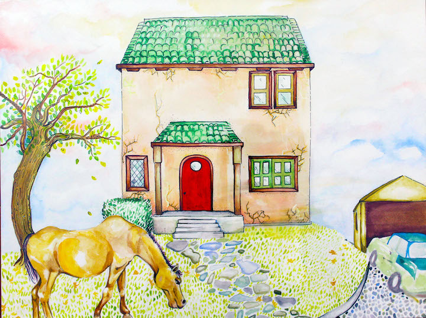
page 9
He found the way from his pasture in the country, to our house in the middle of town!
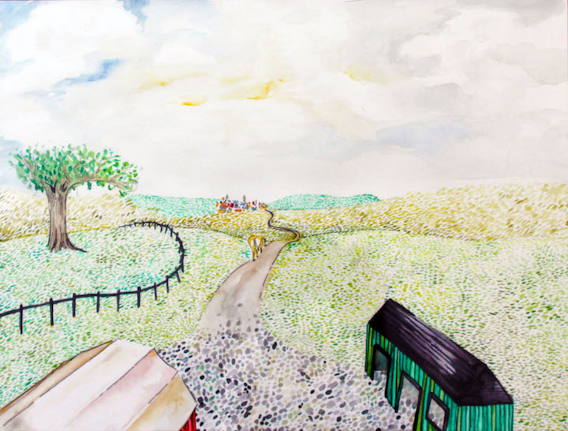
page 10
Yes, Whiskers was a horse who thought for himself and never let me down.
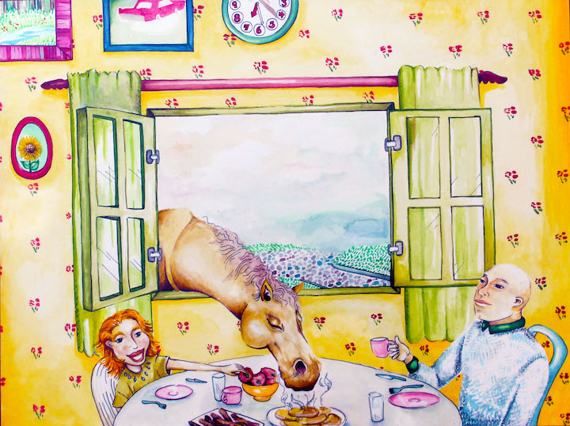
page 11
Another time, he gladly drank my Uncle Jack's glass of iced tea.
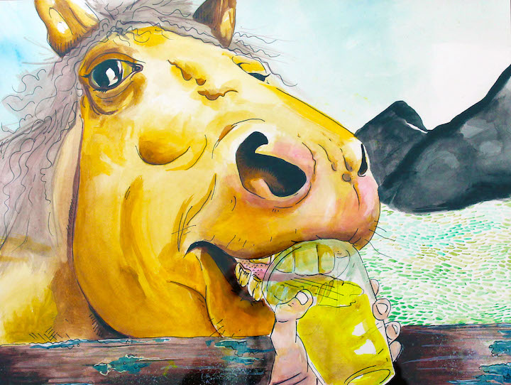
page 12
When the glass was empty we laughed and agreed he was quite a site to see!
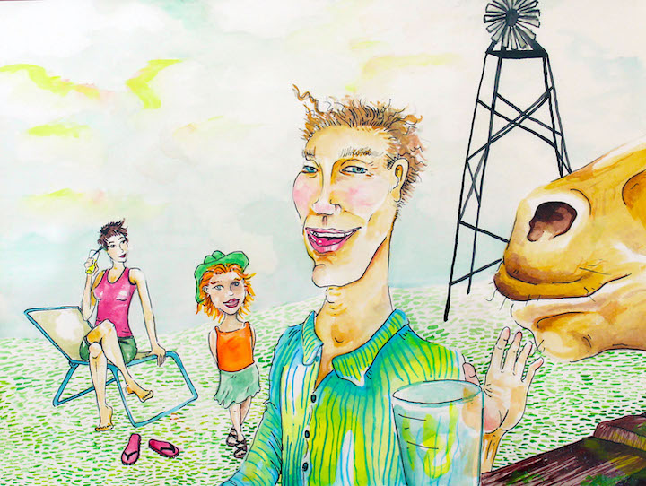
page 13
The best part of Whiskers was never his looks, though I always thought he was fine.
No, the best part of him was no matter what, he was himself–a true one of a kind!
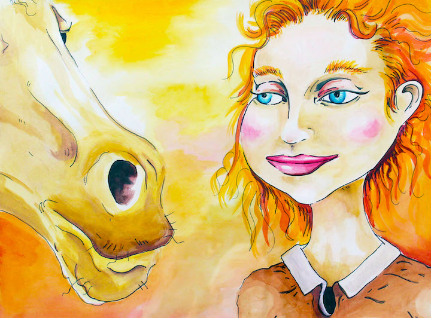
page 14